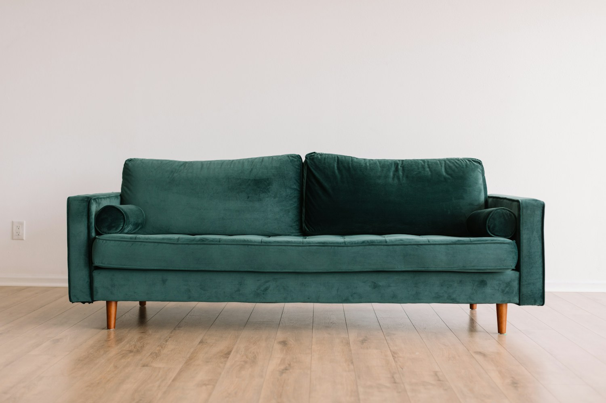

Living room furniture
Explore sofas, lounge chairs and coffee tables that bring comfort and balance to your space.
OUR SERVICES
Explore what we offer, then get in touch to discuss availability, pricing and the right approach for you.
Explore sofas, lounge chairs and coffee tables that bring comfort and balance to your space.
Find dining tables, chairs and sideboards for everything from quiet breakfasts to shared evenings.
Create a restful retreat with beds, bedside tables and practical storage.
Talk through dimensions, materials and furniture combinations before you choose.
FROM QUESTION TO NEXT STEP
Every enquiry starts with a conversation. Services and products are subject to availability, location and an agreed quotation.

Share your requirements and any relevant details.
Discuss the scope, timing and an itemised estimate.
Proceed only when the arrangements are agreed.
Tell us a little about your plans. Start with a simple enquiry.